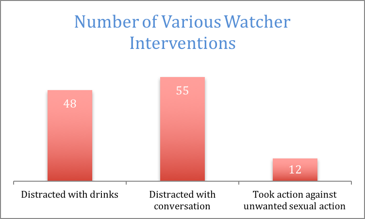
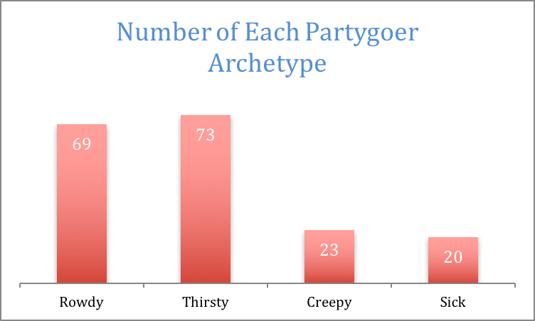

Wet Week is the subsequent week after the initiation deadline during which time new Greeks become socially acclimated and historical increases in medical transports and other alcohol-related incidents persist.
During Wet Week, CW had 85 employees available for work with 23 working events. Each event had at least 3 watchers, at most 6, and an average of 3.3. The busiest day during the period was Monday, 2/29/2016 with 14 Watchers working at once. This may be a result of the fact that it is the first day after the new member period ends, and therefore the first day that new members can attend “wet” events, mainly mixers with fraternities. In fact, all of the events worked by CW during the week were Greek mixers located at Greek houses. On average, events lasted 2 hours and 43 minutes and were attended by almost 100 people.
During training, Watchers learn of different ways that they can mitigate the risks associated with high risk drinking at college parties. Among these are preventing an intoxicated person from drinking more alcohol by providing him or her with water, distracting someone from risky situations with conversation, and acting against unwanted sexual advances. During Wet Week, the most popular method was distracting a partygoer with conversation, which was utilized 55 times. In total, watchers performed 115 interventions, or an average of more than 7 interventions per event. 12 of these actions were taken against people making unwanted sexual advances.

Figure 1: Number of times each intervention tactic was used.
CW groups high-risk partygoers in one of the four following partygoer classifications: rowdy, thirsty, creepy, and sick. During Wet Week, the most frequently observed type was the thirsty partygoer.

Figure 2: Count of each type of partyer.
We strongly believe that these metrics demonstrate how much of a tangible impact Cayuga’s Watchers’ services have on mitigating risky social behavior here at Cornell, and we look forward to continue serving the community for years to come.
— Gabe Joseph, VP Data Analysis